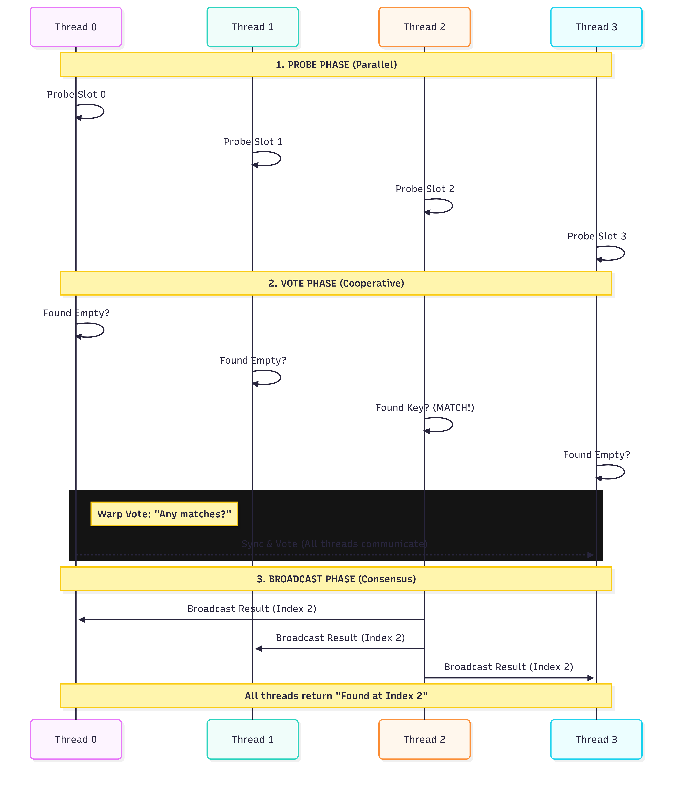

Cuda Static Map Rust: When the compiler lies—atomics, tiling, and feature completion 2/x
Compiler bugs, scoped atomics, and cooperative tiling. How we reached feature completion.
But First
In the first post, we laid the foundation: pairs, storage, and probing. This time, we moved from simple "hashing in place" to a full-blown static map. We're talking bulk insert, bulk find, and bulk contains. We also added cooperative group tiling, so warps can probe together instead of one lonely thread at a time.
Getting there wasn't just about writing code. It meant wrestling with scoped atomics (so the GPU actually respects our memory model), figuring out cooperative group tiling (so we aren't wasting hardware cycles), and—my personal favorite—surviving a barrage of compiler bugs that appeared the second we started passing references and atomics into kernels.
Behind the scenes, we added proper hashing, storage that respects group size (and prime capacity for double hashing), and a way to count successful inserts. I also split the world into two: host-side setup and a small device-side "ref" passed to every kernel. That ref is 16-byte aligned.
The first time we passed it into a kernel? IllegalAddress. Garbage pointers. The kernel was reading zeros where it expected a struct.
I traced it back to an ABI mismatch in the compiler backend. The host packed our struct with 16-byte alignment, but the compiler generated PTX expecting 8-byte alignment. The kernel was reading from the wrong offset, pointing into the void. The fix? We had to tell the compiler to treat 16-byte-aligned structs specially by casting them to 128-bit integer chunks. Without that upstream fix, this blog post would end right here.
Atomics and Scope
GPUs don't just give you "atomics." They give you scoped atomics.
The scope tells the hardware who needs to see the operation. Is it system-wide? Device-wide? Just the thread block? We needed to pick the right scope for every compare-and-swap to make sure the generated PTX matched our intent.
Then our atomic loads started misbehaving. And not in a "maybe I wrote a bug" way. Silly me, thinking the compiler would emit the right PTX.
We were using device-scoped atomics, but the macros emitting the load/store instructions were pasting the Rust scope name ("device") into the instruction string instead of the PTX scope ("gpu"). So a relaxed device load became ld.relaxed.device.u32. PTX doesn't know what "device" means in that context—it expects "gpu".
Get the scope wrong, and the hardware makes no guarantees. In our case, it meant the atomics were effectively broken. We fixed the macros to use the correct PTX nomenclature, and finally, the hardware did what it was told.
Cooperative Group Tiling
So far, we had one thread, one key, one probe sequence. Fine for a Tuesday. But GPUs are happier when threads in a warp cooperate.
So we added cooperative group tiling. A small tile of threads (2, 4, 8, or a full warp of 32) shares the work of one logical operation.

For an insert, every thread in the tile probes its slice of the table. They sync up and vote: "Did anyone see this key?" (if so, stop, it's a duplicate) or "Who found an empty slot?" We pick a winner to do the actual compare-and-swap, then broadcast the result to the whole tile.
For this to work, the probe sequence has to be tile-aware. The whole tile advances in lockstep. We assign each thread a rank and make the step size equal to the tile width. It's like a synchronized search party: everyone checks their assigned spot, then everyone takes a big step forward together.
Of course, two more compiler bugs bit us here.
First, the warp vote functions ("did any lane satisfy this?") returned the opposite boolean. The compiler was checking "if predicate is true, return 0, else return 1" and then returning "result != 0". So when everyone agreed, it returned false. Our "did anyone find it?" checks were inverted. We'd exit early when we found it. We flipped the mapping, and sanity returned.
Second, the enum for shuffle direction used Rust's default values (0, 1, 2, 3), but PTX expects specific values (Idx=0, Up=1, Down=2, Xor=3). Our declaration order didn't match PTX's expectation. When we asked to "broadcast from lane X," the compiler emitted "shift down by X."
Lesson learned: when wrapping low-level intrinsics, never rely on the order you wrote your enum variants. Explicitly assign values.
Tying It Together
The host side unifies the setup. We now have a single host API for the canonical setup.
- Bulk insert: Reset the counter, launch the kernel with the right thread/tile configuration, read the counter back.
- Bulk find/contains: Pass device buffers, launch, copy results.
We've reached feature parity: bulk operations, proper hashing, and optional cooperative tiling to trade off between thread utilization and keys-in-flight.
What's Next?
We have a working static map. It supports 64-bit keys and values, linear and double hashing, and handles collisions like a champ. The atomics are scoped correctly, the tiling is cooperative, and the compiler bugs are fixed upstream.
Next up: benchmarks. We need to see how this thing actually performs and where we can squeeze out more speed.
Until then, happy hashing! 🦀